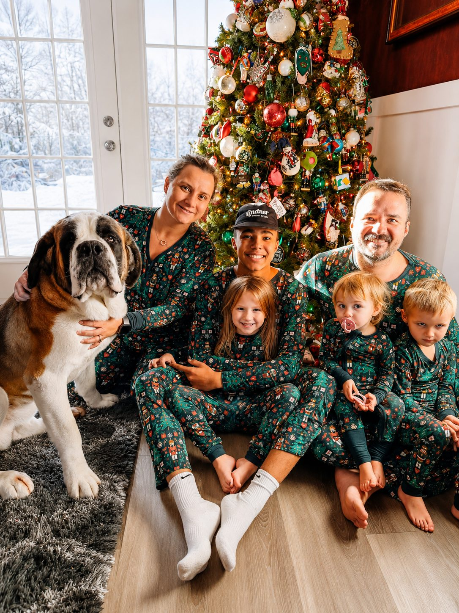

Our love for Saint Bernards began in 2009 with our very first Saint, Marlie. She was there through life changes, hard seasons, moves, growth, and the building of our family.
Marlie shaped the Dixon household and grew our love for Saint Bernards. What started as one dog became part of who we are.
The Noble Dixons is built around family, farm life, and the belief that Saint Bernards are more than pets — they are gentle giants who become part of the story.